はじめて使う学生の目で、パソコンで試して見つかったもののうち、見た目が変わる4つです。それぞれ1つ選んでください。
「段落を削除しました［戻す］」などの知らせが、右下の「元に戻す・やり直す」の帯に重なって、ボタンを隠していました（どの画面の大きさでも）。
知らせが帯の上にかぶさり、「元に戻す」「やり直す」が隠れる。
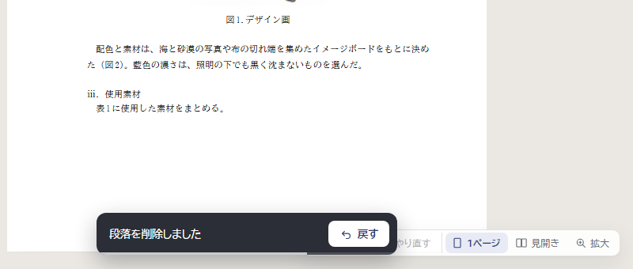
出る場所は今と同じ真ん中のまま、少し上げる。帯のボタンも押せる。
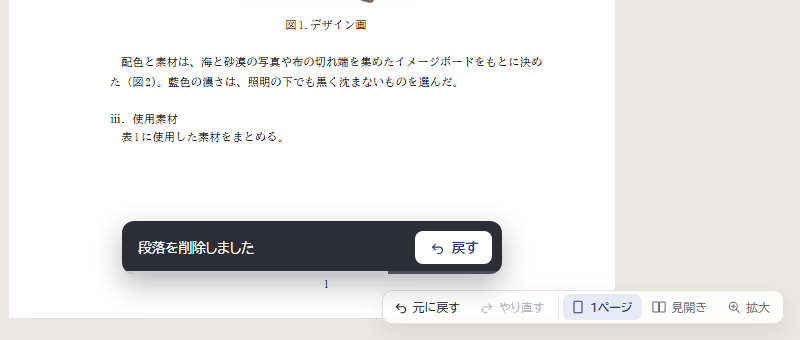
帯と同じ高さで、帯の左に出す。紙面の左下に少しかかる。
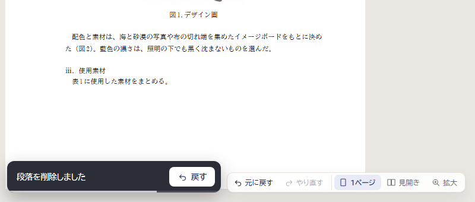
紙面の上の端に出す。帯とは離れるが、書いている所から目が遠くなる。
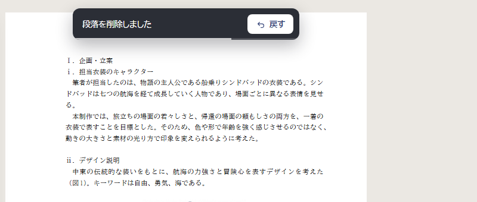
ノートパソコン（1280×720 など）では、ボタンの「左右」「上下」が消え、「2枚」が2つ並んで見分けにくくなっていました。
「1枚・2枚・2枚・4枚」。絵でしか見分けられない。
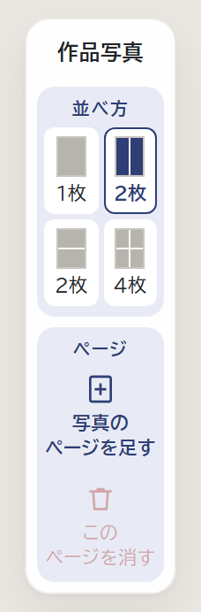
低い画面だけ、2枚のボタンの名前を「左右」「上下」にする。高さは今と同じ。
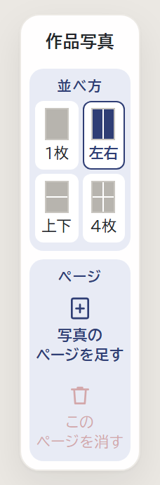
「2枚」の下に小さく「左右」「上下」。字がとても小さい。
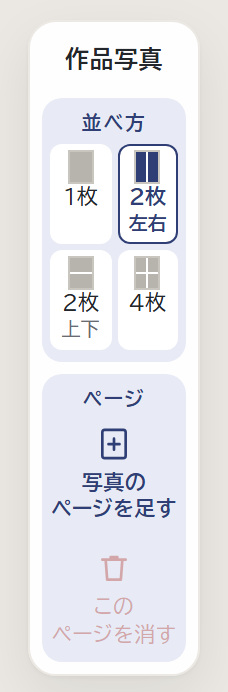
図を入れると、タイトルの欄は「図1.」とカーソルだけで、何を書けばよいか分かりにくい、という声がありました。
「図1.」のあとにカーソルが出るだけ。
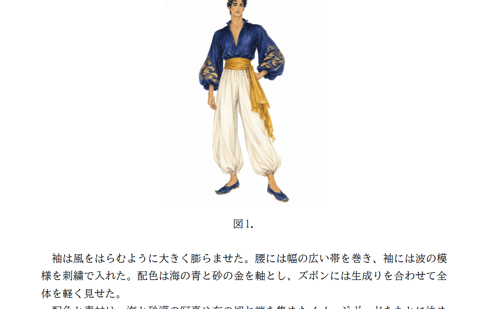
「（図のタイトルを入力。例：デザイン画）」。打ち始めると消える。段落の薄い字と同じ考え方。
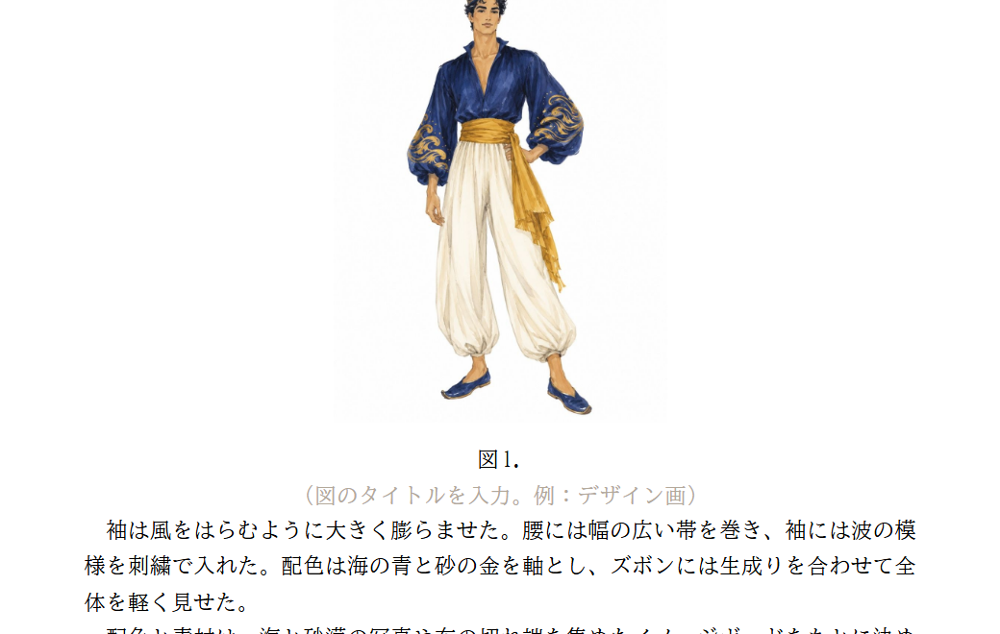
「図のタイトル（例：デザイン画）を入れて Enter」。目立つが、本文の上にかぶさる。
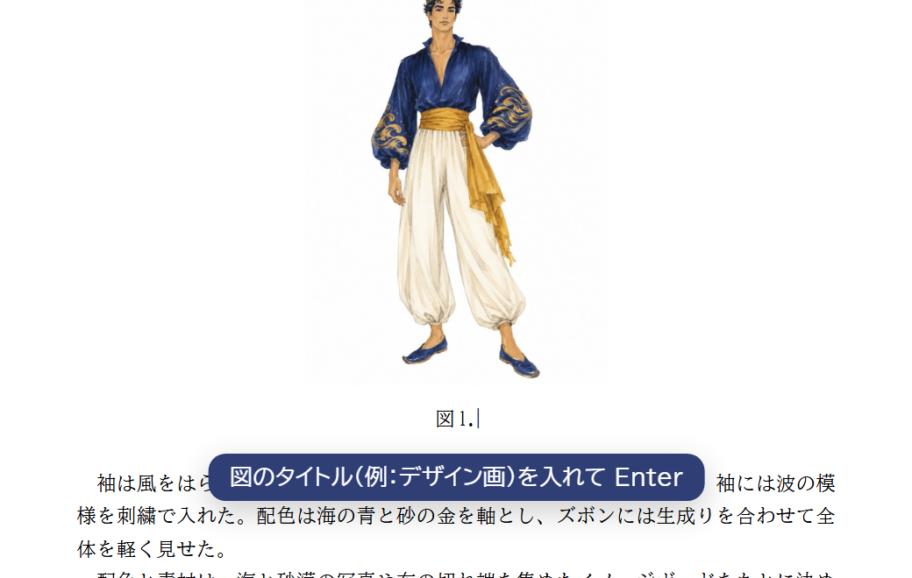
窓を小さくすると、紙面の幅が 266px ほどになり、字が読めませんでした。左右の ‹ › と道具の分の余白が、紙面を狭くしていました。
紙面の幅 266px。
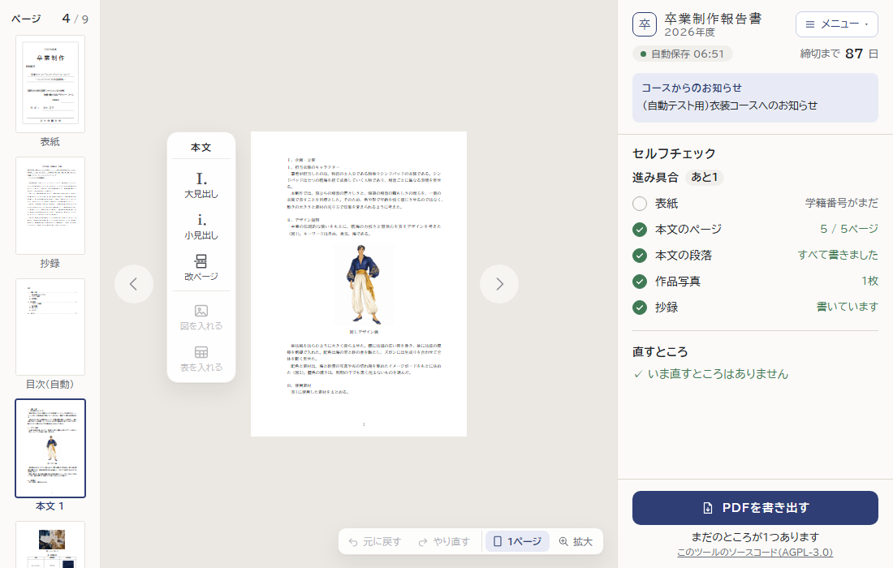
窓が狭いときだけ、‹ › を右下（見開き・拡大のときと同じ所）に移す。紙面の幅 412px。
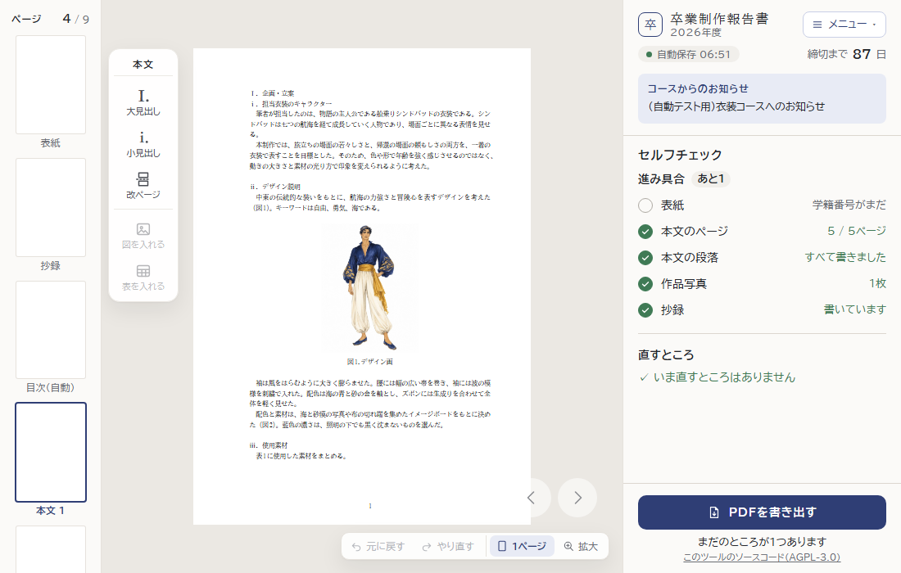
窓が狭いときだけ、ページの一覧と右の欄を細くする。紙面の幅 344px。右上の名前が2行になる。
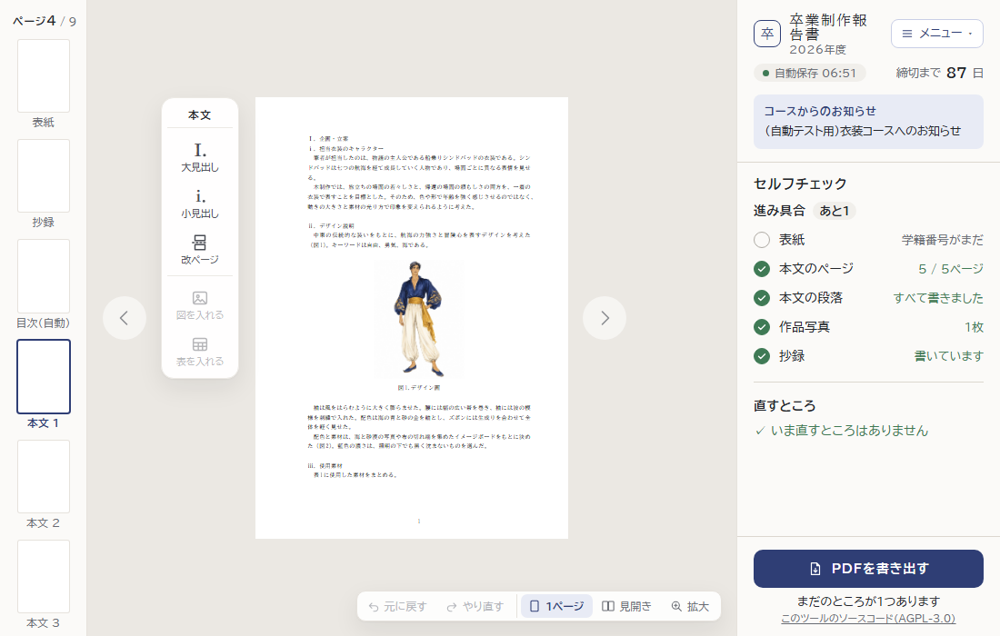
紙面の幅 469px（画面の高さいっぱい）。右の欄が狭く、字が詰まる。
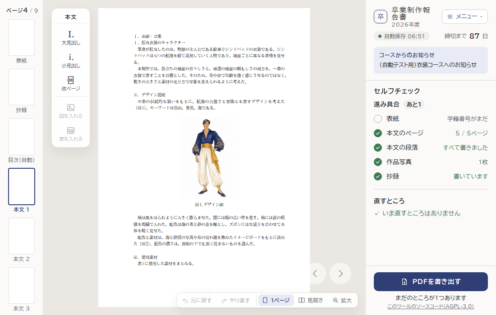